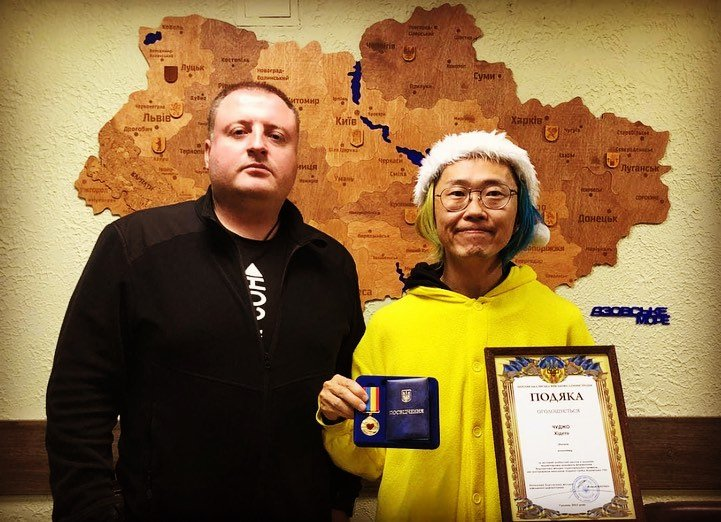
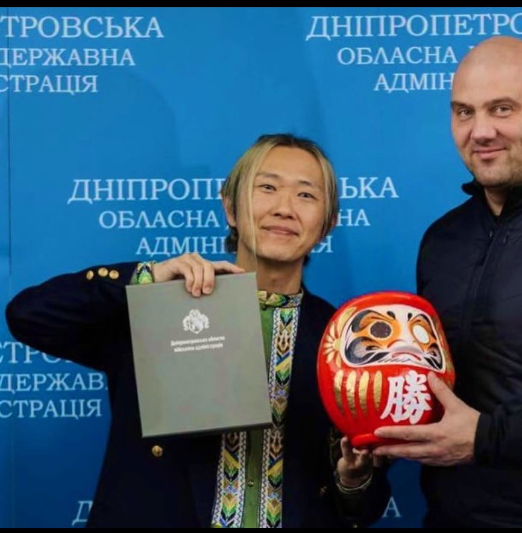
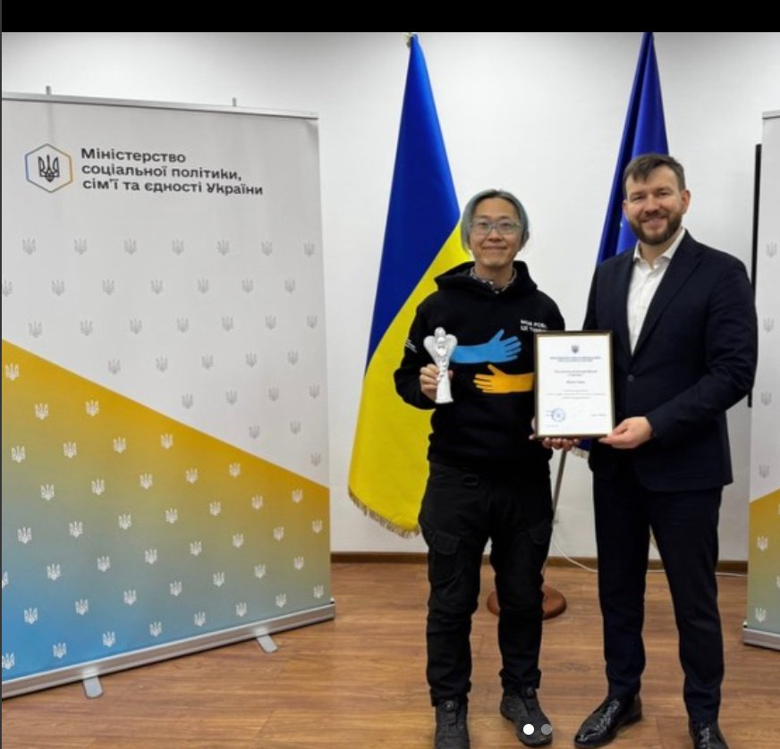

«Усмішка» — це усмішка українською. Під керівництвом Хідето «Піки» Чуджо, який працює безпосередньо в Україні, ми підтримуємо дітей і жінок, що постраждали від російської збройної агресії, та розвиваємо обмін між Японією та Україною.
У прихистку для внутрішньо переміщених осіб в Україні (березень 2026)
100+гуманітарних караванів
З 2022працюємо на місцях
4турніри «Ванпаку Сумо Україна»
Прозорістьпублічна звітність про використання пожертв
Наша діяльність
Чим ми займаємось
ДОПОМОГА ДІТЯМПідтримка дітей
Ми підтримуємо дітей, травмованих російською агресією, та дітей із тяжкими хворобами — відвідуємо дитячі лікарні, проводимо заходи у прихистках і даруємо подарунки, щоб повернути їхні усмішки.
Ми доставляємо гуманітарні вантажі та допомагаємо із житлом. У 2025–2026 роках евакуація людей із небезпечних районів стала нашою головною діяльністю. Ми також надавали аварійне живлення після підриву росіянами Каховської ГЕС, спільно керуємо прихистком із пріоритетом для людей з інвалідністю та щозими розвозимо дрова.
Ми ділимося японською культурою — сумо, кендама, орігамі та музика — з людьми України, зокрема запрошуємо юних українських борців сумо на всеяпонський турнір «Ванпаку Сумо».
Ми зміцнюємо зв'язки між людьми Японії та України та сприяємо відновленню України: керуємо Японським центром «Усмішка» при Дніпровському національному університеті й будуємо партнерства між університетами, громадами та організаціями.
З 2023 року ми щороку проводимо турнір «Ванпаку Сумо Україна». Навіть попри сигнали повітряної тривоги діти викладаються на арені сповна, а переможці отримують запрошення на всеяпонський турнір «Ванпаку Сумо» в Японії.
«Я хочу перемогти на омріяній сцені в Японії та присвятити цю перемогу батькові, який служить у війську.» Ваша підтримка робить такі мрії реальними. Турніри широко висвітлювали українські медіа, зокрема Суспільне та ICTV.
Евакуація людей із небезпечних районів, яку ми продовжуємо від часу підриву росіянами Каховської ГЕС у 2023 році, стала нашою головною діяльністю у 2025–2026 роках. Окрім самого перевезення людей у безпеку, ми також забезпечуємо пальне для евакуаційних автомобілів і підтримуємо їх ремонт.
«Справжні герої не носять плащів — іноді вони носять костюм Пікачу й мають безмежно добре серце.»
── від української команди гуманітарної допомоги, з якою ми працюємо разом
Цей допис на честь Хідето Чуджо, який заправляє пальним автівки, здійснює евакуації та допомагає дітям, зібрав понад 1 000 «вподобайок» і багато слів вдячності від людей України. Переглянути допис в Instagram.
Історія
Наш шлях
До воєнної України
За кілька місяців після початку повномасштабного вторгнення Росії Хідето Чуджо самотужки в'їхав в Україну, розпочавши гуманітарні каравани до прихистків у Львові, Бучі, Києві, Дніпрі, Ужгороді та інших містах. Його жовта худі з Пікачу повертала усмішки на дитячі обличчя.
Засновано Асоціацію «Усмішка»
Створена, щоб забезпечити сталу підтримку з Японії. Видано репортаж із місць подій «Крізь воєнну Україну», про який писали Asahi Shimbun та інші медіа.
Гуманітарний караван №1
Завдяки вашим пожертвам вантажівками по всій країні доставлено зимові речі, портативне освітлення й живлення, сонячні панелі та іграшки. Висвітлювали NHK і місцева преса; повні звіти оприлюднено.
Караван «Піка-Санта» (№2)
Тоді в Україні Різдво святкували двічі — за григоріанським і юліанським календарями (з 2023 року країна відзначає його 25 грудня). У ролі Санти відвідали прихистки, лікарні та родини дітей з інвалідністю у Херсоні, Миколаєві, Запоріжжі, Дніпрі та Харкові, а також провели заходи у найбільшій дитячій лікарні Києва та в художньому музеї Дніпра.
Показ на всю Україну
Діяльність «Усмішки» транслювали на всю Україну національним мовником, про неї повідомляли і в Польщі. Розпочато створення «Дому Усмішки» — простору для навчання та ігор у прихистку в Дніпрі.
Перший турнір «Ванпаку Сумо Україна»
Спільно з Міністерством спорту України провели дитячий турнір із сумо — перший такого роду, висвітлений українськими новинами.
Підрив Каховської ГЕС — екстрене реагування
Від першого дня роздавали портативні генератори в Херсоні, а також 100 павербанків і 10 зарядних станцій, придбаних за пожертви, працюючи разом із представниками міської влади. Отримали офіційні запрошення й подяки від міста та області; про це писала преса США.
Перші юні борці їдуть до Японії
Переможців турніру Миколу (Миколаїв) і Макара (Рівне) запросили на всеяпонський турнір «Ванпаку Сумо» в залі «Рьоґоку Кокуґікан» у Токіо 30 липня.
Від'їзд на понад пів року
Знову вилетів із Ханеди в Україну, продовжуючи Караван №3 поблизу лінії фронту — з публічним звітом за кожну єну.
Подяка від Херсонської міської військової адміністрації
Начальник Херсонської міської військової адміністрації Роман Мрочко відзначив Хідето Чуджо подякою «за вагомий особистий внесок у надання волонтерської допомоги мешканцям Херсонської міської територіальної громади, які постраждали внаслідок підриву греблі Каховської ГЕС». Він продовжує допомагати херсонцям і після звільнення з посади. Наразі в Херсоні ми працюємо у координації із заступником голови ОВА. Переглянути допис.

Другий турнір «Ванпаку Сумо Україна»
Проведено 8 березня на стадіоні «Олімпік» у Дніпрі — від будівництва дохьо до церемонії нагородження — і висвітлено на всю країну Суспільним, ICTV та в прямому ефірі.
Допомога постраждалим районам Запорізької області
На прохання запорізької влади та колег-волонтерів вирушили в райони, що постраждали від російських обстрілів і підтоплення; також допомогли відремонтувати пошкоджені будинки поблизу Дніпровської ГЕС у місті Запоріжжя.
Троє юних борців у Японії; допомога лікарні
Єгор (Миколаїв) і ще двоє змагалися в «Рьоґоку Кокуґікан». Екстрені пожертви підтримали київську національну дитячу спеціалізовану лікарню «Охматдит» після російського ракетного удару по ній 8 липня.
Подяка від голови Дніпропетровської ОВА
Відзнака за гуманітарну роботу в регіоні. Згодом голову призначили керувати міською адміністрацією Одеси. Переглянути допис.

Проєкт «Здоров'я»
Разом зі стоматологами реалізували «Проєкт здоров'я Усмішки» — лікування карієсу, догляд за порожниною рота та уроки чищення зубів для дітей, які не можуть евакуюватися далеко.
У Дніпрі відкрито Українсько-японський центр
Після підписання меморандуму про співпрацю з Дніпровським національним університетом імені Олеся Гончара 25 липня (стаття) 27 жовтня на території університету відкрито Українсько-японський центр (стаття). У співпраці з Українсько-японським центром у Києві він проводить курси японської мови, уроки каліграфії та інші культурні програми.
Переможці третього турніру їдуть на Кубок Хакухо
Переможців третього Всеукраїнського дитячого турніру із сумо «Усмішка» відібрали на японський Кубок Хакухо; Макар приїхав до Японії вдруге.
Евакуація стає нашою головною діяльністю
Евакуація з небезпечних районів, що триває від підриву росіянами Каховської ГЕС 2023 року, у 2025–2026 роках стала нашою основною роботою — разом із підтримкою пального та ремонту евакуаційного транспорту. Переглянути допис.
Зимова розвозка дров (щороку)
Щозими, коли електрика й опалення нестабільні, ми розвозимо дрова в села сільської місцевості. Переглянути допис.
Подяка від міністра Уряду України
Відзнака за гуманітарну роботу від міністра соціальної політики, сім'ї та єдності Дениса Улютіна, який також очолює урядову команду гуманітарної підтримки. Переглянути допис.

Четвертий турнір із сумо
Спільно з Федерацією сумо України провели всеукраїнський турнір для дітей і студентів попри перерви через повітряні тривоги. Тривають регулярні візити до дитячої лікарні «Охматдит», зокрема виготовлення оберегів-значків із дітьми перед операціями.
Понад 100 караванів — Караван №5 триває
На сході та півдні досі тривають бойові дії. Доставка вантажів, візити до лікарень, культурний обмін — під одним гаслом: «Нехай кожна дитина має щасливе дитинство.»
Галерея
З X (Twitter)
Вибрані моменти зі звітів про нашу діяльність у X @ChujoPika. Натисніть на фото, щоб збільшити та переглянути оригінальний допис.
Караван «Піка-Санта»: візит до дитячої лікарні в КиєвіРіздвяне свято для дітей у художньому музеї ДніпраКоординація допомоги з посадовцями Херсона та рятувальникамиРоздача портативних генераторів у Херсоні одразу після підриву Каховської ГЕС100 павербанків і зарядних станцій, придбаних за ваші пожертви, для ХерсонаПошкоджений склад гуманітарної допомоги в ХерсоніВиліт з аеропорту Ханеда на понад пів року в УкраїніБалетна школа в Херсоні, яку ми давно підтримували, постраждала від російського обстрілуЮний борець Єгор із Миколаєва, який прагне до ЯпоніїДовгоочікувана зустріч у Японському центрі в КиєвіУрок японської мови в Українсько-японському центрі в Дніпрі«Я люблю Японію» — з дитиною у прихисткуНа вулиці у ЛьвовіЗвіт Ейсуке Морі, спікеру Палати представників і колишньому голові парламентської ліги дружби Японія–УкраїнаДень вишиванки: традиційний український одягУсмішка зустрічі з дівчинкою, яку повернули в безпекуЯпонський прапор зі словами підтримки, виставлений у Центрі
Підтримайте нашу роботу
Пожертва
У сьогоднішній Україні припаси є «там, де вони є» — насправді допомозі потрібні інформація та операційні кошти. За ваші пожертви ми купуємо припаси на місці, і Хідето Чуджо особисто передає їх дітям в Україні.
Щоб показати, що кожна єна доходить до дітей, ми публікуємо повний звіт про використання пожертв. Пожертви — від 3 000 єн.
Рекомендованим листом: Usmishka Association, 2246 Mure, Mure-cho, Takamatsu, Kagawa 761-0196, Japan. Пожертви надходять до неприбуткової загальної інкорпорованої асоціації та обробляються згідно з нашими правилами щодо пожертв (яп.).
Як використовуються пожертви
Подарунки для дітей (зубні щітки, іграшки, м'які іграшки тощо)
Джерела живлення: сонячні панелі та акумулятори
Матеріали та витрати на заходи
Їжа та напої
Ліки, медичне обладнання та медична підтримка (Проєкт «Здоров'я»)
Транспорт, поїздки, пальне та ремонт автомобілів
Фінансові звіти
Повна прозорість
Ми публічно звітуємо, як витрачено пожертви кожного каравану. (Суми в єнах.)
Караван №5 — проміжний звітстаном на кінець серпня 2025, триває
Пожертви
4 019 000
Роздані товари
2 361 068
подарунки для дітей, акумулятори/живлення, матеріали для заходів
Аутсорсинг
1 319 154
навчання догляду за зубами стоматологами тощо
Поїздки
123 570
місцевий транспорт в Україні
Комісії
147 539
комісії краудфандингу тощо
Пальне
342 828
Усього витрат
4 294 159
Баланс
−275 159
покрито залишками попередніх караванів
Караван №4 — підсумковий звітзавершено 31 серпня 2024
Пожертви
16 839 952
Роздані товари
11 930 393
Організація заходів
1 732 013
Поїздки
90 388
Витратні матеріали
36 276
Комісії
668 622
Пальне
1 140 324
Усього витрат
15 598 016
Залишок
1 241 936
Підтримка Київської дитячої лікарні (липень 2024): пожертви 475 000 / роздані товари 1 218 053 / комісії 19 580 / усього витрат 1 237 633 / баланс −762 633 (покрито Караваном №4 та залишками минулих проєктів).
Караван №3 — підсумковий звітзавершено 31 серпня 2024
Пожертви
13 506 954
Роздані товари
12 272 672
Поїздки
265 757
Комісії
157 520
Пальне
139 792
Курсова різниця
72 367
Усього витрат
12 908 108
Залишок
598 846
Включає екстрену допомогу після підриву росіянами Каховської ГЕС 2023 року (Дніпро, Бахмут, Херсон та інші райони сходу й півдня).
«Нехай кожна дитина має щасливе дитинство.» Майже щоденні звіти з місць подій в Україні. Представник Японії у Волонтерській раді Дніпропетровської ОВА / керівник Японського центру «Усмішка» при Дніпровському національному університеті / співкерівник прихистку з пріоритетом для людей з інвалідністю.
Ми прагнемо надавати допомогу з погляду тих, хто працює на місцях, — там, де це складно урядам і міжнародним організаціям. Щоб урятувати дітей, позбавлених безпечного середовища війною та насильством, потрібні не лише системи та піклування, а й особисті, людські стосунки. Культурний обмін також емоційно підтримує дітей і допомагає розкрити їхній потенціал. Ми підтримуємо роботу Хідето Чуджо на місцях і використовуємо ІКТ, щоб передавати допомогу з Японії дітям України. Дякуємо за ваше розуміння та співпрацю. — Наґаакі Камада, голова